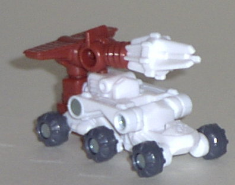
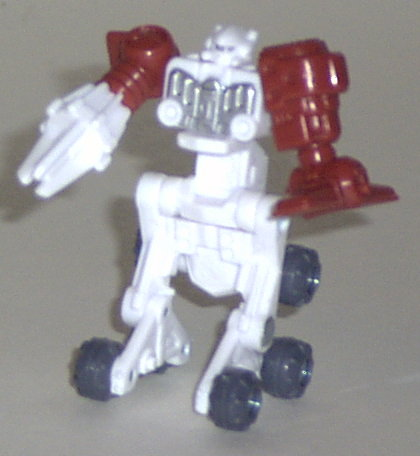
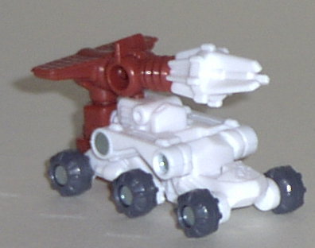
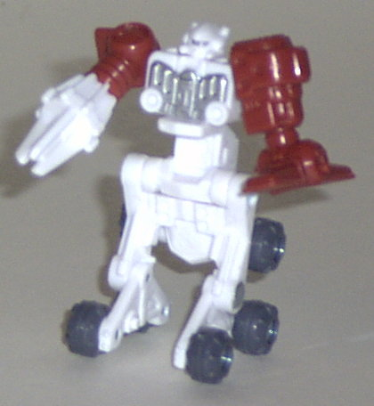
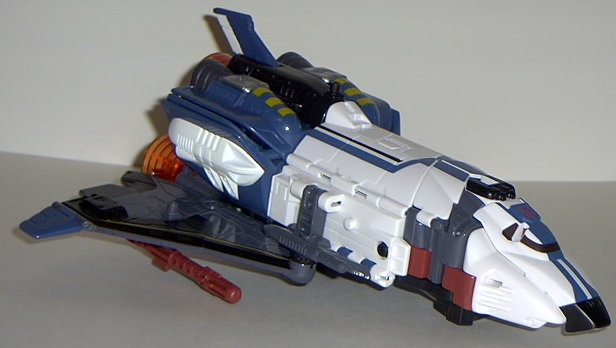
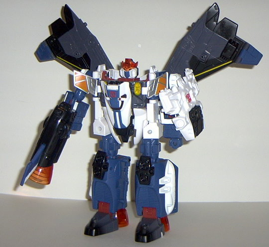

Comettor
(Powerlinx)
Comettor
(Powerlinx)
 
Allegiance : Minicon
Size : Mini-Con
Difficulty of Transformation : Easy
Color Scheme : White, dull rusty red, and some silver and dark gray
Rating : 6.4
(NOTE: Because this set is a repaint, this is not a full-blown review. This mainly covers any changes made to the set and the color scheme, and merely compares it to the original Jetfire w/ Comettor. For a review on the mold itself, read the review of Armada Jetfire w/ Comettor here .)
Comettor
(Powerlinx)


Allegiance
: Minicon
Size
: Mini-Con
Difficulty of Transformation
: Easy
Color Scheme
: White, dull rusty
red, and some silver and dark gray
Rating
: 6.4
Powerlinx Comettor's
color scheme seems to be a bit more fitting for a moon buggy than his original
scheme. Moon buggies are pretty much all white, not blue like the original
Comettor. The dull rusty red is a nice contrasting color, and the silver
looks absolutely lovely on top of that white in robot mode. The gray wheels
don't really mix well with the other colors, but it's certainly realistic.
However, Powerlinx Comettor still suffers from the same lack of paint detailing
that his predecessor had- he has one more paint app this time on his chest,
but that's still only two paint apps, both of which are only visible in
robot mode. I would have liked more of that delicious silver-on-white paint
in vehicle mode, methinks.
No mold changes have
been made to Powerlinx Comettor.
Powerlinx Comettor has
a really great color scheme that is both original and eye-catching. He
still needs some more paint detailing, though. Recommended over the original
Comettor.
 Jetfire
(Powerlinx)
Jetfire
(Powerlinx)


Allegiance
: Autobot
Size
: Giga-Con
Difficulty of Transformation
: Medium
Color Scheme
: White, dark gray,
moderately dark blue, black, and some transparent orange, dull rusty red,
silver, light orange, and gold-yellow
Powerlinx ports
: 5 (3 gimmicked)
Rating
: 9.5
Powerlinx Jetfire is
leaps and bounds above his previous version, and that's saying something.
The color scheme he has this time around is positively inspired, and the
dark blue looks stunning against the white, dark gray, and black. There's
also oodles of new paint apps on him, from the "racing stripes" to the
burn marks on his feet to the golden lines on his wings and lower arms
to the silver apps on his chest panels-- and only a few paint apps from
the original have been sacrificed to make all these new ones! Both of his
Autobot symbols have also been filled in, so no red blobs of paint there.
Yet another nice detail I like is that his eyes are actually painted on
the INSIDE of the transparent plastic shell over them- it makes it look
like he's wearing an energy helmet or something. Very spiffy. There's absolutely
nothing about Powerlinx Jetfire's color scheme that I would change.
No mold changes have
been made to Powerlinx Jetfire, his sound effect trigger still manages
to go off too easily and his missiles don't stay in their slots very well.
Le sigh. He can still combine with
Super Base Armada
Prime
, though.
Powerlinx Jetfire has
an absolutely amazing color scheme, and only a few minor glitches mold-wise.
Definitely recommended over his previous version, and highly recommended
overall.
No Stats
Review by Beastbot